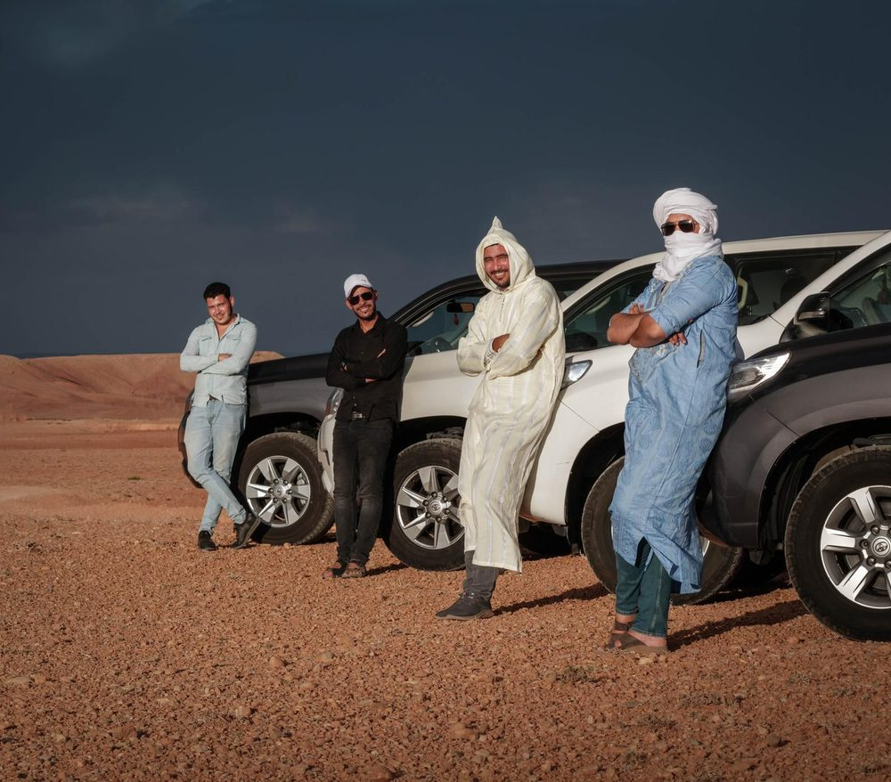
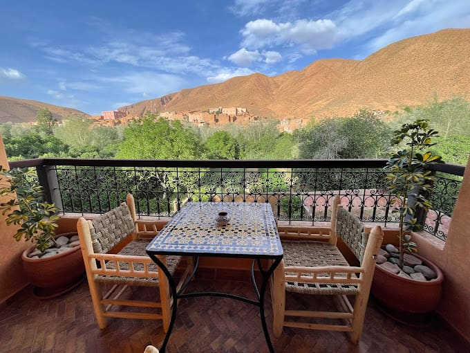

The short answer: Hiring a private driver in Morocco means having your own vehicle and a local driver-guide for your whole trip, available only to your party. It's the most comfortable way to cover Morocco's long distances, from Marrakech over the High Atlas to the Sahara and on to Fes, without the stress of self-driving or the fixed schedule of a group tour. Book it as part of a planned itinerary that includes accommodation, so routes, timings and overnight stops all fit together.
For many travelers from the United States, Canada and Australia, the private driver turns out to be the best decision of the whole trip. Morocco's highlights are spread across mountains, valleys and desert, joined by long scenic roads, and the journey between places is a big part of the experience. Having someone who knows those roads, speaks the languages and understands the culture changes how the trip feels from start to finish.
What a Private Driver in Morocco Actually Does
A private driver is far more than transport. On a typical multi-day trip, your driver will:
- meet you at the airport and take you directly to your riad or hotel;
- drive each day's route at your pace, stopping for photos, viewpoints, lunch and breaks whenever you want;
- suggest the small detours that make a trip: a village market, a little-known kasbah, a family-run café with a view;
- handle logistics such as fuel, parking, check-ins, the meeting point for camels and the hand-over to local guides in Fes and Marrakech;
- translate and explain, often with real insight into Amazigh (Berber) and Moroccan life;
- and be a calm, familiar presence if anything unexpected happens, from a snowy mountain pass to a lost bag.

Driver, Driver-Guide and Licensed Guide: The Difference
These terms get mixed up, and the difference matters:
- Driver: drives and handles logistics. Great company, but not formally guiding at sites.
- Driver-guide: an experienced driver who also shares context about the regions, culture and history along the route. This is what most private tours in Morocco provide.
- Official local guide: in medinas such as Fes and Marrakech, a licensed local guide leads walking tours. Only official guides may guide in the old cities, so private itineraries usually combine a driver-guide for the road with a local guide for half a day in each imperial city.
On our private journeys, this is exactly how it works. Your driver-guide stays with you throughout, and itineraries that include Fes or Marrakech add guided sightseeing with a local expert. Read about the medina experience in our Fes medina guide.
Private Driver vs. Self-Drive vs. Group Tour
| Private driver | Self-drive | Group tour | |
|---|---|---|---|
| Flexibility | Full: your pace, your stops | Full, but you do the work | Fixed schedule |
| Stress on the road | None for you | High on mountain roads and in cities | Low |
| Local insight | Throughout the trip | None, unless you hire guides | Shared with a large group |
| Privacy | Your party only | Your party only | Shared with strangers |
| Accommodation | Chosen for you, with upgrades available | You arrange everything | Fixed, often large hotels or camps |
| Best for | Couples, families, friends, first-timers | Experienced, confident drivers | Solo travelers on a tight budget |
We generally advise first-time visitors against self-driving. The issue isn't the highways, which are good. It's the long mountain passes, unlit rural roads after dark, unclear signage and the challenge of finding parking near a riad in an old medina. Our Morocco safety guide covers road safety in more detail.
Distances and Driving Times You Should Know
These are typical times for the routes our drivers take every week. They don't include stops, which on these roads always take longer than you'd expect.
| Route | Distance | Driving time |
|---|---|---|
| Marrakech → Dades Valley (via Ait Benhaddou) | ~330 km | ~6h30 |
| Dades Valley → Merzouga (via Todra Gorge) | ~230 km | ~4h30 |
| Merzouga → Fes (via Ifrane and Azrou) | ~470 km | ~6h30 |
| Casablanca → Rabat | ~115 km | ~1h15 |
| Rabat → Chefchaouen | ~230 km | ~3h30 |
| Marrakech → Essaouira | ~190 km | ~2h45 |
A good driver plans around these times: leaving early to avoid driving after dark, timing the arrival at Merzouga for the sunset camel trek, and choosing lunch stops that break up the longest days.

What Vehicle to Expect
Most private tours in Morocco use comfortable, air-conditioned SUVs or minivans, depending on group size. Ours use the Toyota Land Cruiser Prado and the Ford Tourneo. 4x4 capability matters for routes that go off-road, such as the track to the Erg Chigaga dunes beyond M'Hamid, or for excursions around the Merzouga dunes. For larger families and groups of friends, a minivan gives more room for people and luggage.
When you compare quotes, ask what vehicle is included, whether it is air-conditioned, and whether the same driver stays with you for the whole trip.
How to Book a Private Driver Well
- Book a whole itinerary, not just a car. The driver's value comes from routes, timings and accommodation working together.
- Check that the company is a registered Moroccan business and read independent reviews. Our guide to choosing a Morocco tour company lists the questions to ask.
- Get everything in writing: what's included (fuel, tolls, accommodation, meals, guides, entrance fees), and what isn't.
- Share your needs early: children's ages, mobility, dietary requirements, special occasions.
- Confirm communication: a WhatsApp contact before and during the trip makes everything easier.
What a Private Driver Costs
Prices vary with the length of the trip, vehicle, season and level of accommodation. The most important thing to know is that the vehicle and driver are shared by everyone in your party, so the price per person falls as your group grows. On our 7-day Grand Sahara tour, for example, the per-person price ranges from €2,248 for a solo traveler to €802 each for four people sharing. That price includes the driver, the vehicle, accommodation, breakfasts, many dinners and the desert camp. See our full guide to private tour costs.
Tipping and Etiquette
- Tipping your driver at the end of the trip is customary and appreciated, in proportion to the length of the trip and the service. It's always at your discretion.
- Lunch: drivers usually eat separately and will happily recommend a place. Inviting them to join you is a kind gesture, but never expected.
- Respect rest: long-distance drivers need proper breaks and a night's sleep, which is one reason good itineraries avoid very long days.
Travel Morocco With Your Own Driver-Guide
Every one of our Signature Journeys is fully private, with your own driver-guide and vehicle from the moment you land. If you'd like a route built from scratch, our tailor-made trips start from your dates and interests. Send us a message, and we'll suggest a route and a quote.